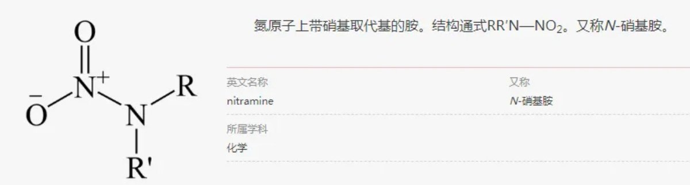
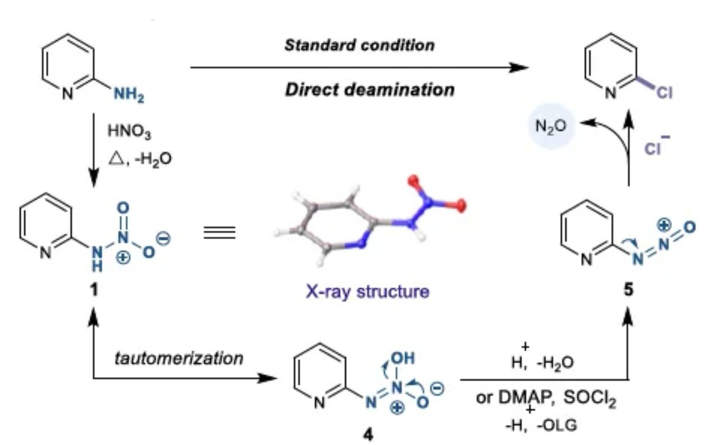
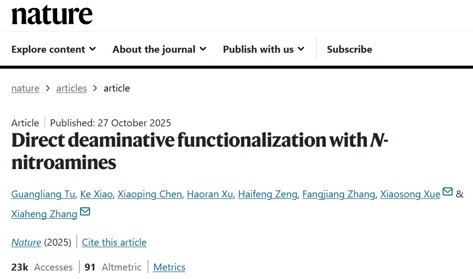
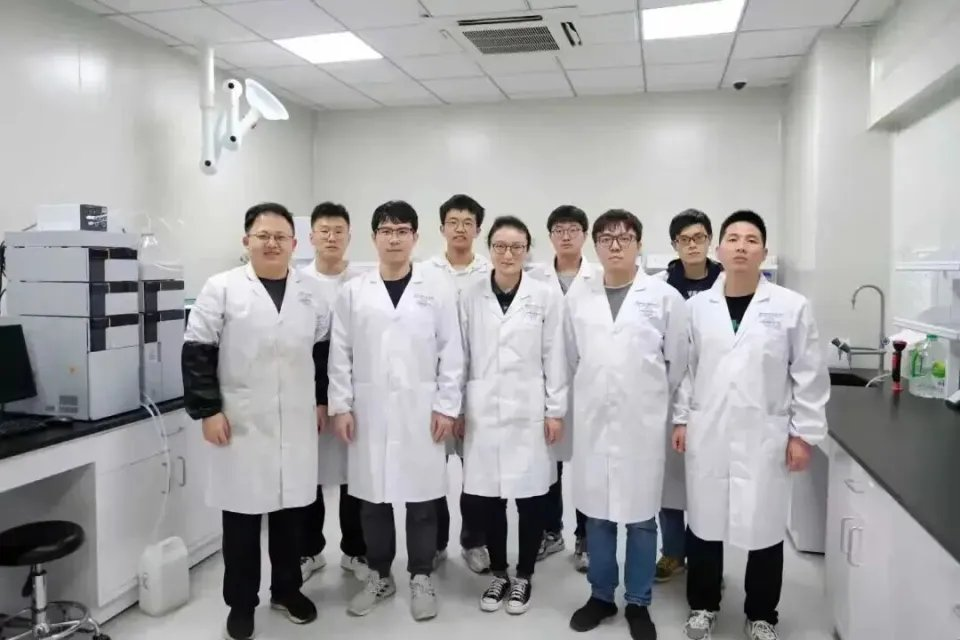

時璃風医詩🍥🌈
@hagishigure
。我來省流。
通過氨基吡啶發現由於電子定位效應等因素硝基會鏈接到氮上面後續會進行Sandmeyer反應。
用氯源通過單電子轉移取代獲得脫胺的氯化產物。
Patrick Fier評價：這是一類我們不知道原理但是衹要看見了就會應用的反應。
Tobias Ritter評價：必須進行安全性評估以確認這在工業上的價值。




Compute King
@Compute_King
中国科学家登上《Nature》：攻克140年化学难题，或大幅降低抗癌药成本
笔者注：最近国内高校在Nature都爆表了呀。。。这个国际顶级学术期刊上个星期刊发了来自中国科学院大学，杭州高等研究院，化学与材料科学学院张夏衡研究团队的最新成果：“Direct deaminative functionalization with https://t.co/oR5l21s8qR